Didesain dengan garis presisi minimalis monokrom tanpa warna emas pekat. Tersedia dalam format SVG vektor murni dan PNG transparan resolusi tinggi (800x800).
SVG & PNG

Sulapa Eppa
Belah Ketupat Kosmik Bugis
Simbol 4 elemen semesta (api, air, angin, tanah) dan 4 karakter ideal ksatria Bugis: Macca (cerdas), Malempu (jujur), Warani (berani), dan Getteng (teguh).
Anyaman bambu berongga belah ketupat yang biasa dipasang pada gerbang penyambutan tamu bangsawan (*saoraja*), simbol perlindungan dan kehormatan rumah tangga.